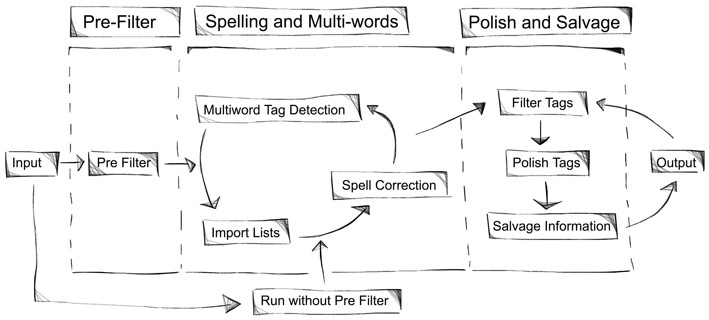

Tag Refinery
TagRefinery is a research project hosted on Github.
Download: TagRefinery
TagRefinery supports you in your task of cleaning and processing open tag spaces. A guided and step-by-step interface allows you to perform efficiently tasks such as spell-correction, multi-word tag detection, and word form consolidation, in a visually supported framework.
The default use case is a significant reduction of a huge vocabulary, without loosing too much information. The project TagFlip used TagRefinery and reduced a dataset with initial 500,000 words full of noise to 362 meaningful words, while still keeping 50% of their inital dataset size. This data is used in a music recommendation app.
We are working currently on the expansion of TagRefinery to more use cases/fields.
Workflow
This picture illustrates the workflow split into three bis steps and seven sub steps.
The Pre Filter step lets you reduce the total amount of words in the dataset by removing rare words. This is intended to reduce the computation time temporary until you have found good parameters in the following step.
The Spelling and Multi-words step provides you with the tools to consolidate word forms (favorite, favourite, favourites,...)), reduce spelling errors and find meaningful multi-word tags (hard-rock, 3d-rendering, ...). The spelling correction is language independed and gives you control what will be replaced. The multi-word detection is realised as a two step method using a frequency and a uniqueness measure.
Data
The first step is the data import. TagRefinery can import csv files with three columns (tag,item,weight).
Tag is the actual tag you are interested in. This can be just one word or any number of words which are treated as one tag.
Item is the item where the tag is attached to. This can be a song, movie or a puplication.
Weight is a positive number which describes how important a distinct tag/item pair is. Here you might include additional meta information you have like ascore you have compuated or the number times a song was listened to. TagRefinery uses the weight to compute the word quality which describes the quality/importance of a certain word.

This is the import view with the example dataset loaded.
Guided Mode
The Guided Mode supports you in the process of tag refinement by presenting the workflow step-by-step. This eases this complex tasks and reduces the mental load of the whole process. The following picture shows an example step. At the top is a progres bar which shows the current position in the whole process, below that is the question which needs a decision and in the bottom is a short description of the step. On the right side is a overview of all completed steps.

Another example step is the spell correction step, which is shown in the following picture. The left list shows all words sorted by there word quality and you can select which of those words should be treated as truth. For those selected words shows the right list all possible replacements with the corresponding similarity.

Results
After moving through all steps you end up with a cleaner set of tags which can be exported again as csv file.

Advanced
Advanced user with background knowledge of natural language processing algorithms or advanced users can use the Advanced Mode. This mode provides all views from the guided mode and in addition more advanced parameters like characters to remove or the maximum number of words in a multi-word tag. This mode gives full control but should be used with care.